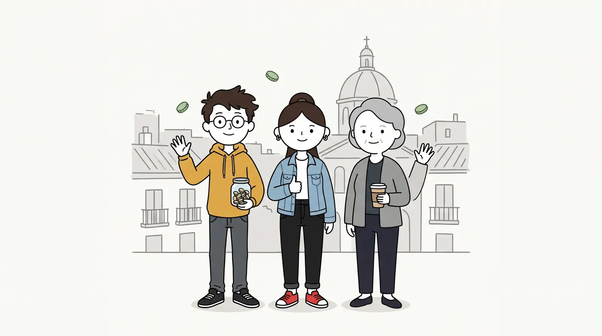

Sobre el canal
Dinero, contado como historias
Historias de Pasta cuenta las finanzas de gente normal que vive y trabaja en España. Con nóminas de verdad, catorce pagas, alquileres, hipotecas y la declaración de la renta.

Qué hacemos
Cada domingo a las 20:00 sale una historia: una decisión de dinero, sus números y lo que pasa años después. Entre semana, Shorts de un minuto con un solo concepto.
Los números son realistas y españoles. Los plazos, honestos: hablamos de años, no de «hazte rico en 12 meses».
Lo que no vas a ver aquí
- Recomendaciones de fondos, brókers ni productos concretos.
- Promesas de rentabilidad.
- Enlaces de afiliado disfrazados de consejo.
Los personajes
Quién es quién
Dani
El protagonista. Mellizo, ahorrador y el tranquilo de la familia.
Lucía
Su melliza. Empezó a ahorrar tarde y vive de alquiler.
Carmen
Su madre, jubilada. Ha visto pasar la peseta, el euro y tres crisis.
Paco
El que explica. Aparece en las PAUSAS con su rotulador.
Aviso
Contenido educativo y de entretenimiento. No es asesoramiento financiero. Las rentabilidades pasadas no garantizan rentabilidades futuras e invertir implica riesgo de pérdida.